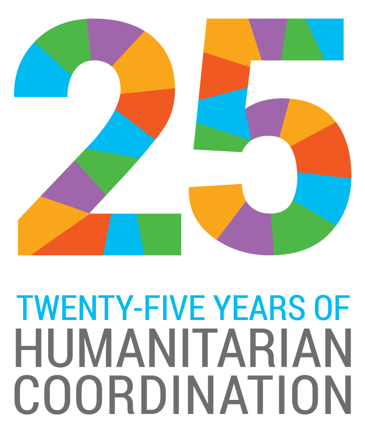

Skip to Content
Skip to Navigation
Japan
Search this site:
OCHA について
OCHA とは
OCHA 神戸事務所
よくあるご質問
世界の人道問題
情報プロダクツ
資料・出版物
世界人道サミット
お知らせ・イベント
マルチメディア
国内避難民
日本の経験
東日本大震災と OCHA
東日本大震災のフォローアップ活動
国際支援受け入れとその他の課題
政策提言
支援を可能にするために
資金手当の為のツール
情報管理の為のツール
リスク管理のための指標（INFORM）
人道プログラムサイクル
国連災害評価調整チーム（UNDAC）
国際捜索救助諮問グループ(INSARAG)
国際緊急援助のためのガイドブック
人道支援のための民軍調整
パートナーシップ
OCHA のパートナー
日本でのパートナーシ ップ構築
日本と OCHA
トップストーリー
OCHA本部のトップストーリー
Home
» News and Events
News and Events
データで読み解く世界の人道状況: 2016年度レポート発表
OCHAは、世界が直面する人道状況の推移と最新データを分析した年次報告書を発表しました。2015年、世界中で人道支援を必要とする人々は、日本の人口に匹敵する1億2,500万人に達しました。この報告書によれば、人道ニーズの大幅な増加にもかかわらず、生活に必要な衣食住や教育・経済面での支援の質と量は、向上するどころか低下傾向にあると指摘されています。
News and Events
Read more
OCHA設立から25年
1991年12月19日、現在の国際人道システムの礎となった、
国連総会決議46/182
が採択されました。この決議は、世界でもっとも弱い立場に置かれた人々に、必要な支援をタイムリーに届けるため、国際社会が結束する決意を表明したものです。
国連人道問題調整事務所 (OCHA) もこの決議から生まれました。緊急支援活動を調整し、資源や人員の動員を推進するほか、関連する政策やガイドラインを策定し、支援を求める何百万人もの人々の声を代弁する役割も担ってきました。そして設立以来の25年間、国際社会と共に、紛争や自然災害に巻き込まれた何百万人もの人々に支援を届けてきました。
News and Events
Read more
G7保健大臣会合に出席
2016年9月11日と12日の2日間、G7主要7カ国の保健分野の担当閣僚や国際機関代表による会合が神戸で開催され、OCHAを代表して神戸事務所長の渡部正樹が参加しました。塩崎恭久厚生労働大臣が議長を務め、感染症等の公衆衛生危機に対する国際的な協力体制の強化など、国際社会が共に取り組むべき課題について意見が交わされました。
News and Events
Read more
2016年「世界人道デー」記念イベント閉幕
みんなでひとつのヒューマニティ
8月19日は、「世界人道デー」です。紛争や災害など世界の人道危機で苦しんでいる人々や現場で援助活動に携わる人々に心を寄せるため、国連総会によって定められました。今年のテーマは「みんなでひとつのヒューマニティ(One Humanity)」。この日、ニューヨークの国連本部で著名なアーティスト等を招いてイベントが行われたほか、戦闘が続くシリアでも映画上映会が催されるなど、世界30カ国以上で記念イベントが行われました。
News and Events
Read more
2016年「世界人道デー」記念イベント開催のお知らせ
みんなでひとつのヒューマニティ
8月19日は国連が定めた「世界人道デー」(World Humanitarian Day)です。現在、紛争や自然災害により、いのちを繋いでいくための支援を必要としている人は、世界中で1億2,500万人。「世界人道デー」はそうした人々に対する支援の輪を広げるとともに、困難な現場で援助活動に携わる人々に心を寄せるための日です。2008年から毎年グローバルなキャンペーンが展開され、世界各地で関連イベントも実施してきました。日本でも、国連人道問題調整事務所(OCHA)の駐日事務所がある神戸で、毎年イベントを開催しています。
News and Events
Read more
世界人道サミット：成果と今後
News and Events
Read more
OCHA日本人職員フィールドレポート（小出圓）
国連人道問題調整事務所（OCHA）フィリピン事務所
人道問題アソシエート担当官 小出 圓（こいで まどか）さん
--フィリピン台風支援における民間セクターの活躍から学ぶ--
届ける支援から、繋がる支援へ
東京都出身。高校留学を機に渡米しアメリカのオーバリン大学で異文化コミュニケーションと生物学を専攻。卒業後、国連ニューヨーク本部でツアーガイドとして勤務する傍らジョージタウン大学大学院で言語・コミュニケーション研究修士号取得。国連事務総長報道官室勤務を経て、2014年6月より日本政府・外務省が派遣するジュニア・プロフェッショナル・オフィサー（JPO）として現職。
台風ハイヤンとOCHAの役割
News and Events
Read more
OCHA日本人職員フィールドレポート（高尾裕香）
国連人道問題調整事務所・人道問題調整官 高尾裕香さん
～人道危機に備えて、国際社会の協調が重要～
News and Events
Read more
インターン募集のお知らせ（2016年夏季）ー終了
国連人道問題調整事務所(OCHA)神戸事務所では、大学院生と大学院を卒業後1年以内の方を対象にしたインターンを募集しています。自然災害や紛争時の緊急人道支援、あるいは国連を通じた国際協力に関心をお持ちの方のご応募をお待ちしています。
１． 主な業務内容
OCHA神戸事務所の業務全般に関するアシスタント。特に、ウェブサイトやフェイスブックなど広報素材の作成、講演向け資料作成、イベント企画・運営の補助、報道モニタリングやインターネット等を使った調査、関連会議への参加・報告書作成など幅広い業務に対応していただきます。特に国際人道問題に関する英文和訳の作業が必須となりますので、当該分野の理解及び翻訳能力を重視します。
２． 募集人数
2名
３． 勤務期間
・ フルタイムで2016年6月から3ヶ月
・ 勤務時間は原則9:00－17:00
４． 応募条件
News and Events
Read more
シリアに関する共同ステートメント
5年にも及ぶ残酷で無意味なこの紛争によって、25万人以上のシリア国民が殺害され、人口の半数以上が恐怖と欠乏のため避難生活を余儀なくされています。特に460万人もの人々が、そこからほとんど逃れることの出来ない、そして援助も届かないような場所で生死の境ともいえる状況におかれています。さらに480万人もの人々が祖国を離れました。今日のシリアは、場所によってはかつての姿が変わり果て、その再建は何世代にもわたることとなるでしょう。
News and Events
Read more
1
2
3
4
5
6
7
8
9
…
next ›
last »

 2016年9月11日と12日の2日間、G7主要7カ国の保健分野の担当閣僚や国際機関代表による会合が神戸で開催され、OCHAを代表して神戸事務所長の渡部正樹が参加しました。塩崎恭久厚生労働大臣が議長を務め、感染症等の公衆衛生危機に対する国際的な協力体制の強化など、国際社会が共に取り組むべき課題について意見が交わされました。
2016年9月11日と12日の2日間、G7主要7カ国の保健分野の担当閣僚や国際機関代表による会合が神戸で開催され、OCHAを代表して神戸事務所長の渡部正樹が参加しました。塩崎恭久厚生労働大臣が議長を務め、感染症等の公衆衛生危機に対する国際的な協力体制の強化など、国際社会が共に取り組むべき課題について意見が交わされました。


") 5年にも及ぶ残酷で無意味なこの紛争によって、25万人以上のシリア国民が殺害され、人口の半数以上が恐怖と欠乏のため避難生活を余儀なくされています。特に460万人もの人々が、そこからほとんど逃れることの出来ない、そして援助も届かないような場所で生死の境ともいえる状況におかれています。さらに480万人もの人々が祖国を離れました。今日のシリアは、場所によってはかつての姿が変わり果て、その再建は何世代にもわたることとなるでしょう。
5年にも及ぶ残酷で無意味なこの紛争によって、25万人以上のシリア国民が殺害され、人口の半数以上が恐怖と欠乏のため避難生活を余儀なくされています。特に460万人もの人々が、そこからほとんど逃れることの出来ない、そして援助も届かないような場所で生死の境ともいえる状況におかれています。さらに480万人もの人々が祖国を離れました。今日のシリアは、場所によってはかつての姿が変わり果て、その再建は何世代にもわたることとなるでしょう。